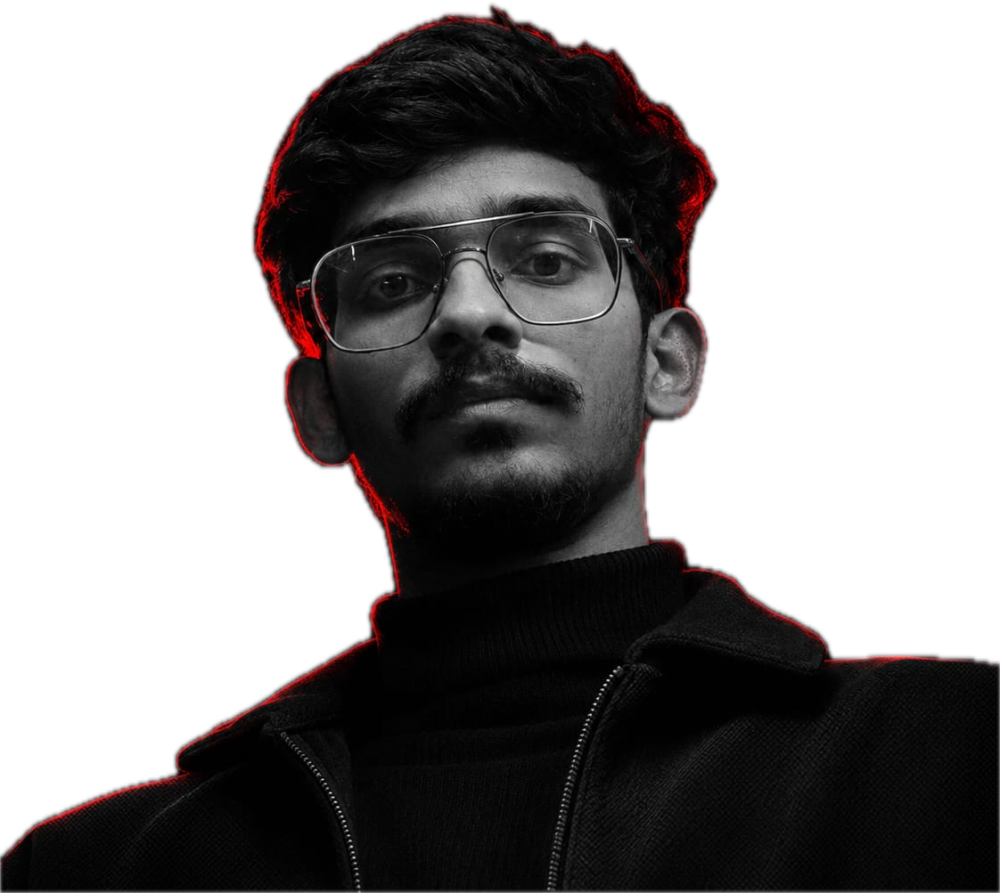
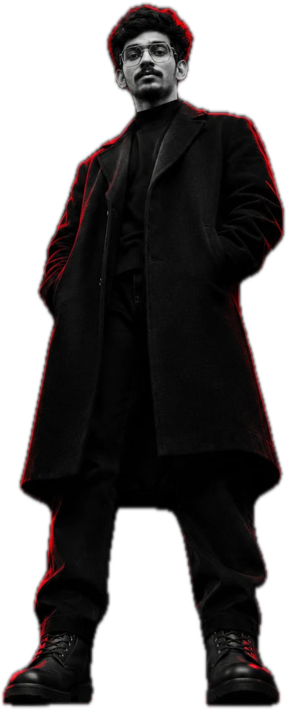

jashu.edits
Reel 01Food brand

Video editorPremiere Pro and After Effects
Based in IndiaAvailable from December
I cut music videos, ads and reels that people watch twice.
When there's no brief, I make my own. The Second Take is my content page, where I script, shoot and edit reels in my own style: a red-and-maroon look, framed shots and motion graphics built in After Effects.
Watch on InstagramReel 1 is out · Reel 2 is being scripted
Tool: Premiere Pro, with AI tools for transcripts and noisy audio
Tool: Lumetri in Premiere Pro
Tool: Premiere Pro, After Effects for type
Tool: After Effects
Rates depend on length and turnaround, so every project is quoted on its own.Send a brief

I'm Jashu (Jaswanth on paper). I edit video for brands, musicians and anyone with a story worth cutting.
Most of my work happens in Premiere Pro, with After Effects for titles, motion and cleanup. Music videos are my favourite, short documentaries a close second.
When there's no brief, I make my own on The Second Take. Lately I've been learning AI tools for the boring parts, like transcripts and noisy audio, so there's more time left for the edit.
Available from DecemberIn India IST
Click the address to copy it, or select it like any text.